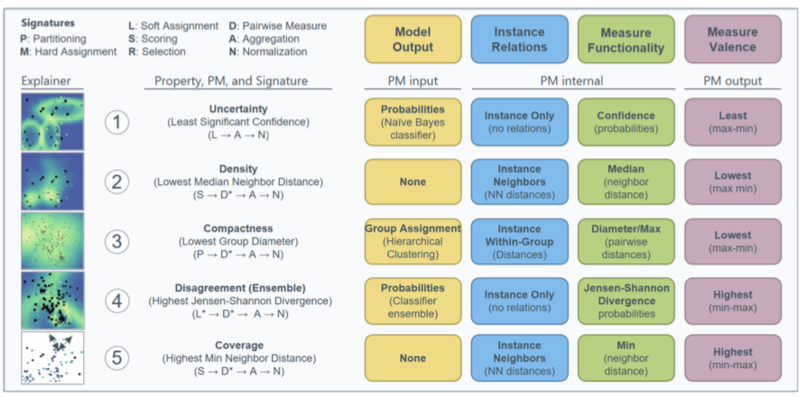

A Taxonomy of Property Measures to Unify Active Learning and Human-centered Approaches to Data Labeling

Venue. TiiS (2021) Full Paper
Authors. Jürgen Bernard, Marco Hutter, Michael Sedlmair, Matthias Zeppelzauer, Tamara Munzner
Abstract. Strategies for selecting the next data instance to label, in service of generating labeled data for machine learning, have been considered separately in the machine learning literature on active learning and in the visual analytics literature on human-centered approaches. We propose a unified design space for instance selection strategies to support detailed and fine-grained analysis covering both of these perspectives. We identify a concise set of 15 properties, namely measureable characteristics of datasets or of machine learning models applied to them, that cover most of the strategies in these literatures. To quantify these properties, we introduce Property Measures (PM) as fine-grained building blocks that can be used to formalize instance selection strategies. In addition, we present a taxonomy of PMs to support the description, evaluation, and generation of PMs across four dimensions: machine learning (ML) Model Output, Instance Relations, Measure Functionality, and Measure Valence. We also create computational infrastructure to support qualitative visual data analysis: a visual analytics explainer for PMs built around an implementation of PMs using cascades of eight atomic functions. It supports eight analysis tasks, covering the analysis of datasets and ML models using visual comparison within and between PMs and groups of PMs, and over time during the interactive labeling process. We iteratively refined the PM taxonomy, the explainer, and the task abstraction in parallel with each other during a two-year formative process, and show evidence of their utility through a summative evaluation with the same infrastructure. This research builds a formal baseline for the better understanding of the commonalities and differences of instance selection strategies, which can serve as the stepping stone for the synthesis of novel strategies in future work.